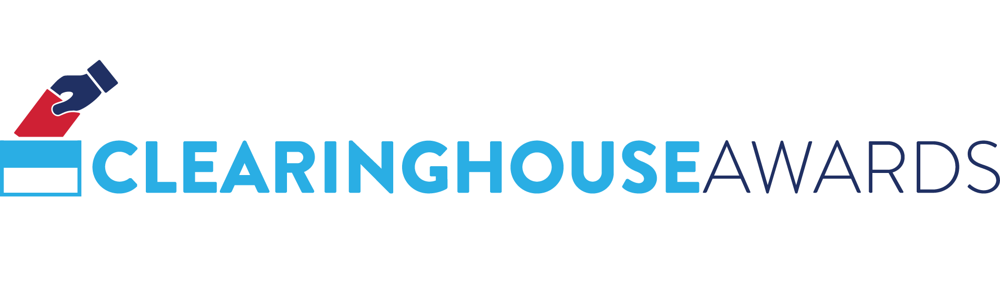
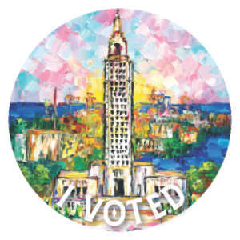
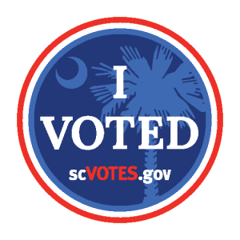
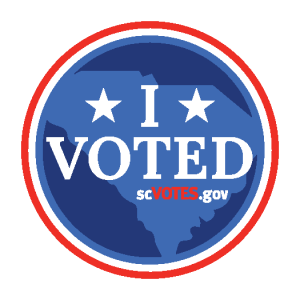

The Clearinghouse Awards, also known as the “Clearie” Awards, are presented annually across the U.S. for best practices in election administration by the U.S. Election Assistance Commission (EAC). Established by the Help America Vote Act of 2002 (HAVA), the EAC is charged with serving as a clearinghouse for election administration information. To further this mission, the EAC launched the Clearies in 2016 to promote best practices in elections and celebrate the accomplishments of election officials.
The EAC is excited to recognize the hard work and innovation of the 2022 Clearie Winners. The EAC is also recognizing 16 jurisdictions with 2022 Clearie Honorable Mention awards.
2022 Clearinghouse Award Categories
Outstanding Use of HAVA Grants in Election Modernization
Outstanding Election Official State Association Program or Local Office
Outstanding Innovation in Election Cybersecurity and Technology
Improving Accessibility For Voters With Disabilities
Outstanding Innovations in Elections
Best Practices in Recruiting, Retaining, and Training Poll Workers
Creative and Original “I Voted” Sticker Design

Maricopa County Elections Department, Arizona
Ballot Tabulation Center Security Upgrades
Federal and state laws require that the ballots be protected, and the Department of Homeland Security has designated tabulation equipment as critical infrastructure supporting national interests. With Help America Vote Act grant funds, the Maricopa County Elections Department modernized its Ballot Tabulation Center by adding layers of security. The department built a secure ballot vault along with a dedicated server room, adding increased transparency into the elections process and providing additional security and protection of voted ballots. During an election cycle, which can last for several months from mailing ballots to canvassing the election, these enhanced security and transparency features allow the Elections Department to meet the rigorous state and federal requirements and demonstrate to the public how the County keeps this critical information and equipment secure.
New Jersey Secretary of State's Office Elections Division, New Jersey
HAVA Funds & Election Security
Shortly after the 2016 presidential election, the New Jersey Office of the Secretary of State, New Jersey Department of State/Division of Elections made the decision to reach out to their partners at the New Jersey Office of Homeland Security and Preparedness for assistance on election security. In doing so, a specified HAVA-funded election security team was created within the New Jersey Cybersecurity Communications and Integration Cell (NJCCIC), focusing primarily on the cybersecurity efforts affecting the twenty-one counties of New Jersey. Currently, all election security operations are based out of the Regional Operations Intelligence Center (ROIC), New Jersey's fusion center. Since then, Secretary of State Tahesha Way, the New Jersey Division of Elections, and the NJCCIC have expanded its scope to include Election Day monitoring, a Security Operation Center for main election incident and response, physical assessments of county election infrastructure, trainings and awareness campaigns for county election officials and staff. Included in these election security efforts is a preparedness initiative, where the team has worked with each election office to build a customized Continuity of Operations Plan (COOP) in response to any possible events. This team represents New Jersey's proactive thinking and modernization towards providing safe and secure elections.
Seminole County Supervisor of Elections Office, Florida
Informing Voters with Facebook Voting Alerts
Kyndle Cobb, Community Services Coordinator for Seminole County Elections, spearheaded a joint effort with the Florida Secretary of States Office and the Florida Supervisor of Elections Association to allow all 67 counties to be able to utilize the Voting Alert feature within Facebook. Allowing counties to post a free alert to the top of every citizen's Facebook page in their local county/city provided each office with the ability to reach thousands of voters instantly and provide them with the trusted information needed to vote. This effort in Seminole County alone allowed for tens of thousands of voters to be informed about vote-by-mail deadlines, election worker applications, election day information, and more. Combined, voting alerts in Seminole County had over 270,000 impressions across 9 posts.

Anne Arundel County Board of Elections, Maryland
Mail-in Ballot Sorting, Scanning, and Timestamping Project
Anne Arundel County Board of Elections took the lead developing a software solution between the MDVOTERS voter registration system and Tritek Technologies mail sorting equipment. Working between the 2022 Primary Election and General Election, the Board of Elections was able to develop a software solution that allowed the Board to use its mail machine to upload ballot receipts into MDVOTERS. This allowed the Board to save 500 hours of labor checking-in ballots between the Primary Election and General Election, while also notifying the voters via text or email that their ballot has been received by the Board of Elections.
Iowa Secretary of State, Iowa
Vulnerability Disclosure and Bug Bounty Program
There is growing momentum in election offices around the country to institute Vulnerability Disclosure Programs and Bug Bounty programs to help election officials bolster their cyber maturity. The Iowa Secretary of State's Office became the first election office in the nation to launch a Bug Bounty program. The office offers monetary rewards to security researchers who find vulnerabilities in websites maintained by the Secretary of State's office. The Bug Bounty program launched in 2022, ahead of the November general election. It was a valuable addition to Iowa's Vulnerability Disclosure Program (VDP) which launched in 2020. Iowa is the second state election office in the country to launch a VDP.

Dubuque County Auditor's Office, Iowa
Strategic Partnership with Dubuque County Disabilities Council
The Dubuque County Auditor's Office formed a strategic partnership with the Dubuque County Disabilities Council to visit polling locations on election day during the Primary and General elections to assess if any improvements could be made to polling places. The partnership was able to determine that small changes like better placement of curbside voting signs, larger laminated elevator signs, and word changes could help improve the voting experience for all. Additionally, the office added clip-on lights to voting booths to improve lighting, which improved accessibility for voters with visual impairments. The office is continuing to work with the Dubuque County Disabilities Council to offer tangible, practical, and impactful improvements for future elections.
Franklin County Board of Elections, Ohio
Voting with Ease: Increased Accessibility in the Early Vote Center
The Franklin County Board of Elections Early Vote Center (EVC) occupies three interconnected rooms with approximately 16,000 sq. ft. of space necessary to accommodate 870,000 registered voters. Given the size and scale of the EVC, staff recognized the need to designate a space to better serve voters with mobility issues. Consequently, a voter ADA Station was created so that voters could bypass the substantially longer route through the EVC and to provide better accessibility. The ADA Station was located immediately inside of the main entrance and equipped with seating so that voters would not have to stand or walk far to use voting equipment. It initially consisted of two check-in stations, three ADA accessible voting kiosks, and it was managed by a team of Board staff to provide additional assistance. Due to popularity, the station was expanded to 12 additional kiosks. Adding this service did not increase election costs. Existing staff, equipment, and materials were reallocated to create the ADA Station as a subset of the larger EVC. The office received numerous compliments from voters, observers, and activists sharing their appreciation and encouraging them to incorporate this as a permanent part of the EVC.

Large Jurisdictions
Duval County Supervisor of Elections Office, Florida
Innovative Strategies in Voter Education Messaging and Poll Worker Recruitment
The Duval County Supervisor of Elections Office created innovative strategies to expand their Voter Education Messaging and Poll Worker Recruitment efforts. These efforts have led to innovative partnerships that have improved the office’s community outreach efforts. These partnerships have included professional sports teams and educational institutions.
Hamilton County Board of Elections, Ohio
In response to public discourse and anxiety about election integrity, the Hamilton County Board of Elections developed its "Behind the Ballot" program to give voters a behind-the-scenes tour of the Board of Elections office and warehouse. Tour participants see processes like the recruiting and training of over 2,000 poll workers, running the early vote center, logic and accuracy testing of the voting equipment and tabulation system, conducting audits, and maintaining an accurate voter registration database with almost 600,000 voters. Hamilton County has put on tours for civic groups, school groups, candidates, and the local media. The tours resulted in several news stories about election integrity and several participants have signed up to be poll workers. Even voters with significant concerns about election integrity reported an increased confidence in election systems after completing the tour. The Hamilton County Board of Elections makes the tours available to any interested group. They are a part of the Board's strategy to dispel election misinformation and enhance voters' trust in the outcome of elections.
Hillsborough County Supervisor of Elections, Florida
Election Night Unofficial Results Application
During the 2022 election cycle, the Hillsborough County Supervisor of Elections office developed an application that was used to track and report on receipt of unofficial results. This innovation enabled them to have more timely results reporting, with 100% of precinct-level results received by 8:25 p.m. election night for the 2022 General Election.
Palm Beach County Supervisor of Elections, Florida
The Palm Beach County Supervisor of Elections office was the first in the nation to offer Early Voting appointments during the 2022 Primary and General Elections. The program, No Wait Inside (NWI), launched successfully with 21,356 voters who participated. No Wait Inside is a virtual waiting room cloud application that rose to popularity at doctor's offices during the pandemic; the Palm Beach County Supervisor of Elections office implemented its services in a unique way. The new program allowed voters to make an appointment during a time window and at a location convenient for them, schedule an appointment online up to 30 days in advance, cancel the appointment at any time, receive text notifications about their upcoming appointment, and skip the line during their appointment window to vote quickly. The state-of-the-art low-cost program is flexible, customizable, allows for fast implementation, and communicates directly with voters to let them know exactly when you are ready for them.
South Carolina Election Commission, South Carolina
"South Carolina Election Response Guide" - Crisis Communication for Election Officials
With threats to election workers on the rise, the South Carolina Election Commission created the 'South Carolina Election Response Guide.' The 'South Carolina Election Response Guide’ is a crisis communication reference card that was printed and given out to county election directors, election officials, and staff across the state before the 2022 election cycle. The card was small enough to fit inside a wallet for quick and easy access. The card listed talking points, sample media questions, and important contacts so that if a crisis should arise on election day or leading up to election day, election officials would have a quick guide to reference to help them navigate the situation in real time.
St. Louis County Board of Elections, Missouri
Love Your Ballot Educational Campaign
Every vote matters. Yet every vote cannot always be counted when ballots are torn, marred, improperly marked, or a voter's intent is unknown. With nearly 335,000 absentee ballots mailed to St. Louis County's Board of Elections since June 2020, ballot openers witnessed repeated problems that can cause ballots to be rejected or require time-consuming duplication. Wanting every vote to count, the Board of Elections launched “Love Your Ballot,” an educational campaign through social media to address common mistakes made by voters. Taking a humorous approach to a serious subject, the Elections Board produced a series of eight videos featuring employees showing common mistakes, with voiceover scripts explaining how these actions can affect accurately counting the votes cast. The successful campaign ran prior to the primary and mid-term elections in 2022 and was shared on the agency's Facebook, Twitter, Instagram and TikTok platforms. The Love Your Ballot campaign, along with other strategies, significantly improved ballot quality in time for the 2022 primary and mid-term elections, with a duplication rate that decreased from 13.7% to 3.5%.
Small/Medium Jurisdictions
Brevard County Supervisor of Elections, Florida
Recent legislation passed by the Florida Legislature required Supervisors of Elections to allow voters to view mail ballot envelopes and corresponding voters signature. To implement the law, the Brevard County Supervisor of Elections team developed an in-house application to allow observers to view mail ballot envelopes and corresponding voters signature. The SigView program shows the mail ballot certificate envelope and signature on file, side by side. The application also indicates if the ballot was accepted or referred to the Canvassing Board.
Douglas County Clerk/Elections, Kansas
RFID Technology in Election Management
Douglas County, Kansas, (voter population 83,000) collaborated with a technology partner to develop, test and implement an RFID (radio frequency identification) equipment chain-of-custody system which includes using a mobile application for event tracking. Barcodes can be cumbersome and impact the efficiency of delivery schedules. Using RFID tags, the elections office is able to track large groups of equipment or find one specific item in the warehouse while creating a historical event log which can be used for auditing and security. The evolution of RFID technology allowed for use of cellular phones and a mobile app for event tracking, thus reducing costs. The scope of the project expanded from tracking tabulators and ballot marking devices to bags, voting booths, tables and chairs. An alert system informs the delivery team if a piece is missing from the allocation for the polling place and central office live monitoring of delivery schedules. This project shows how use of technology advancements have allowed a small/medium size county to implement an innovative approach to a complex logistical problem in election management without adding additional staff.
Durham County Board of Elections, North Carolina
BOE Poll Count and Audit Application
The BOE Poll Count and Audit Application was developed in 2020 to create an electronic/automated means for county precincts to report critical election information. Additionally, this application was built to streamline the election night audit process by integrating electronic and automated tools.
Paulding County Board of Elections and Voter Registration, Georgia
Paulding County created a voter education guide that went to every household in the county with registered voters. This guide educates the voters on election processes, laws, and what their part is in being a successful elector. The Board received such positive feedback from the local parties and voters that this is now a part of the office’s budget every 2 years.

Charleston County Board of Elections and Voter Registration, South Carolina
Partnerships at the Polls encompasses two programs intended to assist the Charleston County Board of Elections and Voter Registration in recruiting and retaining poll workers: Adopt a Polling Location and Day for Democracy. Through Adopt a Polling Location, the Board of Elections and Voter Registration partners with local organizations who "adopt" polling locations on Election Day by having their teams service as election workers. Organizations can then use the funds earned from their work to support a local nonprofit, enabling them to staff polling locations with professional workers while supporting their community. Day for Democracy is a program offering Charleston County employees the opportunity to serve as election workers without using their paid time off, building relationships among our workforce and highlighting their dedication to public service. Partnerships at the Polls gives their voters reliably staffed polling locations while allowing them to reinvest in their community, reduce administrative burden, and minimize time and effort spent recruiting and retaining poll workers through traditional methods. In the inaugural year, $9,800 was raised for local nonprofits and 95% of participants stated that they enjoyed being a part of Partnerships at the Polls.
Columbia County Supervisor of Elections, Florida
The Columbia County Supervisor of Elections Office designed the 'Bubble it in' T-Shirt. Poll workers wore this shirt throughout early voting and on election day as a voter education tool. Voters may miss important voting instructions when they vote. The office found that voters responded well to having this information placed on a brightly colored t-shirt, and they reported having fewer spoiled ballots because of this voter education effort.
Guam Election Commission, Guam
A Win-Win for the Guam Election Commission and the University of Guam
The Guam Election Commission (GEC) partnered with the University of Guam (UOG) Public Administration Degree Program to offer an academic credit bearing class on Elections Administration in an effort to recruit poll workers for the 2022 General Election. The two-credit course included twelve (12) hours of lecture at the University, an exam, and a practicum: working as a Precinct Official or Election Assistant on Tuesday, November 8, 2022, at island polling sites. The course was also offered for Continuing Education Units (CEUs) and as a professional development course for teachers. Twenty-six students enrolled: Four students paid $402 each to earn 2 credits toward their Public Administration degree program; one teacher signed up for professional development toward recertification and twenty-one students earned three CEUs. The teacher and the twenty-one students were not assessed any fees. The HAVA Security Grant funded the recordation fee for all twenty-six students at $25.00 each. The HAVA Security Grant also added $150 for each precinct official to increase the stipend to $500. The GEC Director has also been invited to teach a three-credit class on Elections Administration for the 2023 Fall Semester. Biba HAVA! Biba UOG! Biba GEC!
Martin County Supervisor of Elections, Florida
Sensitivity Training for Elections Worker!
The Elections Office worked with Helping People Succeed (HPS), a local non-profit agency for individuals with disabilities, to participate in poll worker training. The poll workers received hands-on experience with assisting voters with disabilities during the training session. The session was recorded and used as a tool for future poll worker trainings. HPS also placed the training video on their website for clients to view. This program received great feedback, and the training videos were shared with other non-profit organizations.

City of Traverse City Clerk's Office, Michigan
Multi-year Voting Sticker Design Contests
The City of Traverse City launched a multi-year sticker design contest to show off their voter pride, Traverse City style! The contests were: a classic “I Voted” sticker in 2020; a student-designed “Future Voter” sticker in 2021; and a “First Time Voter” sticker in 2022. The city has used the unique sticker designs in branding, promotional, and educational materials. Additionally, each of the city’s seven precincts include selfie stations where voters can show off their stickers or hold up signs that read “Future Voter” and “First Time Voter.”

Louisiana Department of State, Louisiana
Louisiana State of Mind
Louisiana voters are passionate about their "I Voted" stickers, especially given how unique each of them has been. In the past, Louisiana received national attention for their 2016 sticker featuring the world-famous blue dog by George Rodrigue, and their 2018 sticker, a special take on their state seal by Tony Bernard. The 2022 sticker features an incredible work of art by Becky Fos, entitled "Louisiana State of Mind," featuring Louisiana's state capitol building, the tallest in the nation, and bright colors that highlight Louisiana's unique scenery and culture.

South Carolina Election Commission, South Carolina
South Carolina's Iconic "I Voted" Sticker Redesign
When Howie Knapp became the new Executive Director of the State Election Commission, one of his first initiatives was to revamp the "I Voted” sticker. The State Election Commission tasked its Voter Education team to gather for input, develop designs, and select winners. Two winning "I Voted” stickers were selected and printed for statewide distribution during the 2022 election cycle. One of the winning sticker designs features South Carolina's most historically iconic images, the palmetto tree. The other design features an outline of the state map. South Carolinians take great pride in their state and having a new "I Voted” sticker that speaks to such state pride and state identity is another way to further promote the importance of voting.
